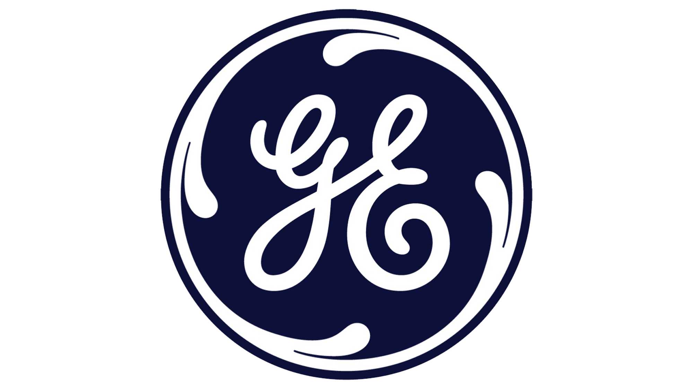

GE Aerospace
Querétaro, Mexico · Internships
Designer Intern, Product Definition
Aug 2026 – PresentRISE Open Fan · Siemens NX
Designed 70+ mounting brackets and completed 20+ electrical harness routing revisions. Resolved clearance and minimum bend radius issues through support bracket designs; prepared product definition drawings using established datums and tolerance tables.
Lean Summer Experience Intern
Jun – Jul 2026Integrated Performance & Operability (IP&O)
Introduced visual planning, KPI dashboards and weekly reviews with managers and program leads. Meeting leaders recorded an approximately 20% reduction in average meeting duration.